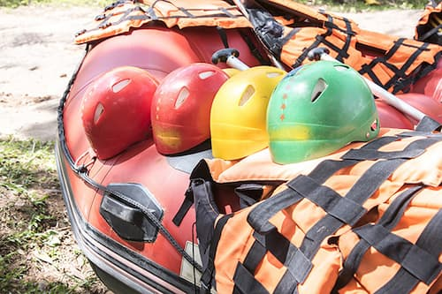
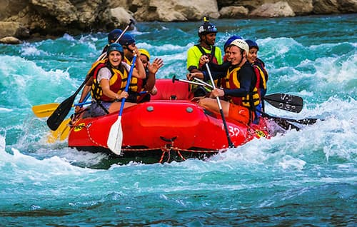

Have Questions About a Trip?
Please contact one our team via the contact form and we will be more than happy to help
Contact Us
The Tom Sawyer Float Trip is a relaxed, kid-friendly outing that lets young adventurers build confidence and make lasting memories on the river.
Learn More
Widely considered the most challenging commercial rafting trip in the country, Big Mallard offers a riveting ride through one of the Sierra’s most remote and rugged canyons.
Learn More
Perfect adventure for corporate team building. Various floats and grades available.
Learn More| Trip | Description | Grade | Minimum Age | Duration | Price | Equipment Required |
|---|---|---|---|---|---|---|
| Family Float | This family float is the perfect adventure for small kids. With a minimum age of 4, and plenty of opportunity to splash in the waters of the Sawyer River, this trip provides a wonderful morning adventure for families. | Grade 1 | 4 years | 7 kms • 1 ½ - 2 hours on the river | $140 per adult $95 per child | Light clothing, shorts & t-shirt are ideal. Lots of suntan lotion. Towel & a change of clothes for the end of the day. Any medication you require. |
| Los Dientes del Diablo | This is the ideal one day white water river trip for families with children as young as eight and those who want to experience white water rafting on the Nile without the intensity of grade 5 rapids. | Grade 3 | 8 years | 15 kms • 4 - 5 hours on the river | ||
| Tutea Falls | This legendary 20km whitewater run located just outside Yosemite National Park delivers the perfect mix of adventure, scenery, and solitude. | Grade 3-4 | 12 years | 20 kms • 6-7 hours on river | $370 per person | |
| Big Mallard | Widely considered the most challenging commercial rafting trip in the country, Cherry Creek, also known as the Big Mallard, offers a riveting ride through one of the Sierra’s most remote and rugged canyons. | Grade 4-5 | 17 years | 1-day, 2-day or 3-day options | $444 - $1265 per person | |
| Team Events | Perfect adventure for corporate team building. Various floats and grades available. | Various | 17 years | 1-day or 2-day options | Please enquire for group prices |